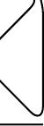
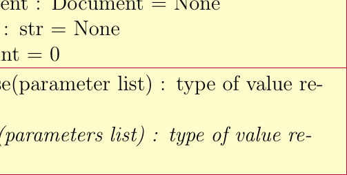

Tracing Sphinx Domain Directives
The PyLiT Sphinx_extension
Read time: 0.0 minutes (3 words)

An Example Directive with Caption

Example UML Class
And more text.
logo

![\begin{class}[text width=5cm]{BankAccount}{0,0}
\attribute{owner : String} \attribute{balance : Dollars = 0}
\operation{deposit(amount : Dollars)}
\operation[0]{withdrawl(amount : Dollars)}
\end{class}
\begin{class}[text width=7cm]{CheckingAccount}{-5,-5}
\inherit{BankAccount}
\attribute{insufficientFundsFee : Dollars}
\operation{processCheck ( checkToProcess : Check )}
\operation{withdrawal ( amount : Dollars )}
\end{class}
\begin{class}[text width=7cm]{SavingsAccount}{5,-5}
\inherit{BankAccount}
\attribute{annualInteresRate : Percentage}
\operation{depositMonthlyInterest ( )} \operation{withdrawal ( amount : Dollars )}
\end{class}](../_images/tikz-4f2d47d53c2a7c4e79cbef3795771a255f432992.png)